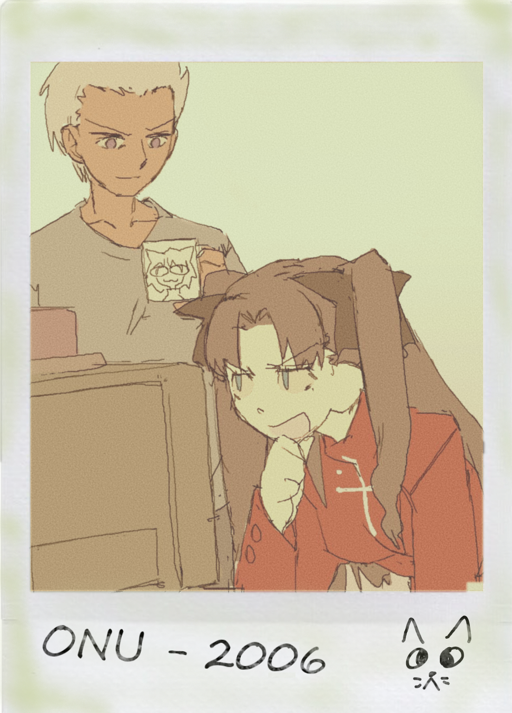

Olá!
Me chamo Rin Tohsaka e especializo na área de Engenharia de Sistemas e de White Hat Hacking.
Nasci no Japão e já trabalhei na Europa e Ásia, hoje trabalho como freelancer no Oriente Médio.
Sou muito otimista e perfeccionista. Quero mostrar e provar meu potencial a todos.

Trabalhei nos sistemas de segurança da ONU por 4 anos. Conheci diversos profissionais e ganhei muita experiencia.
Fui voluntaria na Cruz Vermelha Asiática como uma engenheira de sistemas ajudando na distribuição de medicina.
Tenho trabalhado como freelancer e ajudado a comunidade local desde então.
Serviços:
- Teste de Segurança e Detecção de Brechas
- Engenharia de Sistemas e Organização
- Programação
- Manunteção de SGBD's
- Para mais serviços entre em contato